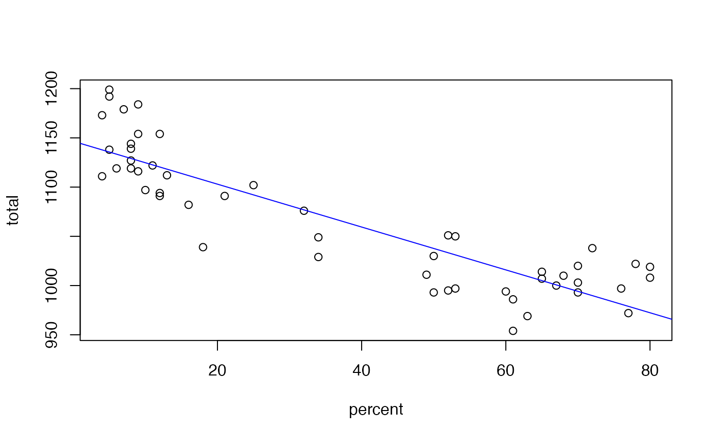

Data for Statistical Insight Chapter 9
Sat
A data frame/tibble with 102 observations on the following 7 variables.
U.S. state
verbal SAT score
math SAT score
combined verbal and math SAT score
percent of high school seniors taking the SAT
state expenditure per student (in dollars)
year
The 2000 World Almanac and Book of Facts, Funk and Wagnalls Corporation, New Jersey.
Kitchens, L. J. (2003) Basic Statistics and Data Analysis. Duxbury
Sat94 <- Sat[Sat$year == 1994, ] Sat94#> # A tibble: 51 x 7 #> state verbal math total percent expend year #> <chr> <int> <int> <int> <int> <int> <fctr> #> 1 alabama 482 529 1011 8 3616 1994 #> 2 alaska 434 477 911 49 8450 1994 #> 3 arizona 443 496 939 26 4381 1994 #> 4 arkansas 417 518 935 6 4031 1994 #> 5 california 413 482 895 46 4746 1994 #> 6 colorado 456 513 969 28 5172 1994 #> 7 connecticut 426 472 898 80 8017 1994 #> 8 delaware 428 464 892 68 6093 1994 #> 9 dist of columbia 406 443 849 53 9549 1994 #> 10 florida 413 466 879 49 5243 1994 #> # ... with 41 more rowsSat99 <- subset(Sat, year == 1999) Sat99#> # A tibble: 51 x 7 #> state verbal math total percent expend year #> <chr> <int> <int> <int> <int> <int> <fctr> #> 1 alabama 561 555 1116 9 4903 1999 #> 2 alaska 516 514 1030 50 9097 1999 #> 3 arizona 524 525 1049 34 4940 1999 #> 4 arkansas 563 556 1119 6 4840 1999 #> 5 california 497 514 1011 49 5414 1999 #> 6 colorado 536 540 1076 32 5728 1999 #> 7 connecticut 510 509 1019 80 8901 1999 #> 8 delaware 503 497 1000 67 7804 1999 #> 9 dist of columbia 494 478 972 77 9019 1999 #> 10 florida 499 498 997 53 5986 1999 #> # ... with 41 more rowsstem(Sat99$total)#> #> The decimal point is 1 digit(s) to the right of the | #> #> 94 | 4 #> 96 | 92 #> 98 | 6334577 #> 100 | 03780149 #> 102 | 029089 #> 104 | 901 #> 106 | 6 #> 108 | 21147 #> 110 | 212699 #> 112 | 2789 #> 114 | 444 #> 116 | 39 #> 118 | 429 #>plot(total ~ percent, data = Sat99)model <- lm(total ~ percent, data = Sat99) abline(model, col = "blue")summary(model)#> #> Call: #> lm(formula = total ~ percent, data = Sat99) #> #> Residuals: #> Min 1Q Median 3Q Max #> -68.343 -26.613 -0.865 18.263 63.356 #> #> Coefficients: #> Estimate Std. Error t value Pr(>|t|) #> (Intercept) 1146.5289 7.4940 152.99 <2e-16 *** #> percent -2.1770 0.1629 -13.37 <2e-16 *** #> --- #> Signif. codes: 0 ‘***’ 0.001 ‘**’ 0.01 ‘*’ 0.05 ‘.’ 0.1 ‘ ’ 1 #> #> Residual standard error: 31.81 on 49 degrees of freedom #> Multiple R-squared: 0.7848, Adjusted R-squared: 0.7804 #> F-statistic: 178.7 on 1 and 49 DF, p-value: < 2.2e-16 #>rm(model)